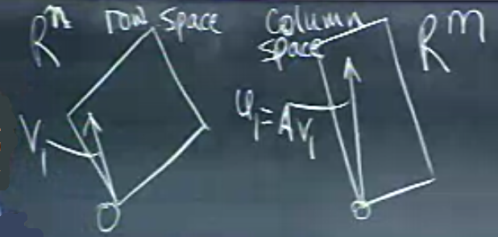

Nihayet en son ayrıştırma (decomposition) konusuna geldik, bu teknik Eşsiz Değer Ayrıştırma (Singular Value Decomposition -SVD-) tekniğidir. Ayrıştırma şu halde olacak
\[ A = U \Sigma V^T \]
Sağ tarafta ayrışma sonrası bir dikgen (orthogonal) matris, bir köşegen (diagonal) matris, ve tekrar bir dikgen matris olacak. Yani bildiğimiz, sevdiğimiz matris formları ayrışma sonrası parçalar olarak elimize geçecekler. İlginç olan iki tane dikgen matris elde etmemiz. Ayrıca \(A\) her türden, her boyuttan bir matris olabilir (illa karesel olması gerekmez mesela).
SVD bu dersin pek çok kavramını da bir araya getirir. Mesela simetrik pozitif kesin matrisler. Hatırlarsak bu matrisler simetrik olduğu için özvektörleri dikgen idi. Yani normalde şu haldeki bir ayrışma
\[ A = S \Lambda S ^{-1} \]
Su halde gorulebiliyordu
\[ A = Q \Lambda Q ^{T} \]
Yani \(S\), dikgen vektörlü \(Q\) oluyordu, pozitif kesinlik sayesinde de normal bir \(\Lambda\), içinde sadece pozitif değerler taşıyan bir \(\Lambda\) oluyordu.
Özetle, eğer \(A\) simetrik pozitif kesin ise onun SVD’si \(Q \Lambda Q ^{T}\) olacaktır. Bu durumda tek \(Q\) matrisi yeterli, diğer durumlarda \(U,V\) gibi iki farklı matris lazım. Ayrıca şunu da vurgulayalım: SVD için dikgenlik aradığımız önemli bir şart, “dikgen çarpı köşegen çarpı dikgen’’ şeklinde bir form istiyorum özellikle.

SVD’den beklediğimiz işlemi yukarıdaki resim üzerinden anlamaya çalışalım. Soldaki düzlem satır uzayı (row space), sağdaki kolon uzayı (column space). Bir matrisi temsil eden satırlar ve kolonlar bu uzayların içinde. Şimdi eğer \(U \Sigma V^T\) formunu düşünürsek, öyle bir köşegen matris arıyorum ki satır uzayındaki dikgen bazı (basis) uzayındaki bir dikgen baza transform etmeli. Bu hakikaten özel bir matris olmalı.
Soru: satır uzayının dikgen bazı var mıdır? Tabii ki vardır, Gram-Schmidt tekniğinde gördük, herhangi bir bazın dikgen bazını alabiliriz. Dikgen baz hesabı özgün değildir, aynı bazdan pek çok dikgen baz çıkartılabilir, ve satır uzayındaki “herhangi’’ bir dikgen bazı alıp kolon uzayına transform edersem onun illa dikgen kalacağı garanti değildir. Yani transform edildikten sonra da dikgen kalacak özel bir dikgen baz arıyorum. Yapmaya çalıştığım çarpım her vektörü gösterecek şekilde nasıldır?
\[ A \left[\begin{array}{rrrr} & & & \\ v_1 & v_2 & ... & v_r \\ & & & \end{array}\right] = \left[\begin{array}{rrrr} & & & \\ u_1 & u_2& ... & u_r \\ & & & \end{array}\right] \left[\begin{array}{rrrr} \sigma_1 & & & \\ & \sigma_2& & \\ & & \ddots & \\ & & & \sigma_r \end{array}\right] \]
Yani \(Av_1\) çarpımı bana \(u_1 \sigma_1\)’i vermeli. Matris olarak yukarıdaki
\[ AV = U\Sigma \]
Hatta dikgenlikten daha ileride birimdikliği (orthonormal) hesaplamak daha da iyi.
Örnek
\[ A = \left[\begin{array}{rr} 4 & 4 \\ -3 & 3 \end{array}\right] \]
\(A\) tersine çevirilebilir (invertible) o zaman kertesi (rank) 2. Aradıklarım
\[ v_1,v_2 \ \mathbb{R}^2 \textit{ satır uzayında } \]
\[ u_1,u_2 \ \mathbb{R}^2 \textit{ kolon uzayında } \]
\[ \sigma_1 > 0, \sigma_2 > 0 \]
Sıfır uzayı (nullspace) burada problem değil. Zorluklar neler? Matris simetrik olmayabilir, o zaman özvektörleri kullanamam, çünkü onlar dikgen değildir.
\[ A = U \Sigma V^{-1} \]
\(V^{-1}\)’yi başka nasıl yazabilirim? \(V\) kare, dikgen olacağına göre, \(V^{-1} = V^{T}\). O zaman
\[ A = U \Sigma V^{T} \]
Şimdi hesabı düşünmeye başlayalım. İki tane ayrı dikgen matris bulmam lazım, ama bunların ikisini de aynı anda bulmak istemiyorum. Bir fikir: öyle bir numara yapayım ki \(U\) yokolsun her şey \(V\) üzerinden temsil edilsin.
Alttaki ifade ne zaman elimizde genel dikdörtgensel (kare olmayan) bir matris varsa karşımıza çıkan bir ifade, \(A^TA\). Bu matris kare, pozitif kesin, yani güzel özellikleri var. O zaman üstteki formülü \(A^T\) ile soldan çarpacağız,
\[ A^T = V \Sigma^T U^{T} \]
olduğuna göre,
\[ A^TA = V \Sigma^T U^{T} U \Sigma V^{T} \]
\(U^TU = I\) olduğuna göre
\[ A^TA = V \Sigma^T \Sigma V^{T} \]
Kolaylaştırmalar bitmedi. \(\Sigma\) köşegen olduğuna göre, \(\Sigma^T\Sigma\) köşegendeki değerlerin karesinden ibarettir.
\[ = V \left[\begin{array}{rrrr} \sigma_1^2 &&& \\ & \sigma_2^2 & & \\ && \ddots & \\ &&& \sigma_r^2 \end{array}\right] V^T \]
İşte, \(U\)’lar yokoldu. Bu son ulaştığımız formda \(V\)’ler nedir? Özvektörlerdir! Problem mükemmel bir özdeğer / özvektör problemine dönüştü, yani \(Q\Lambda Q\) haline geldi. Bu kolaylığa, sonuca \(A\) yerine \(A^TA\)’yi kullanmak sayesinde eriştik.
Pekala bu şekilde \(V\)’leri elde ediyoruz, ama \(U\)’yu nasıl elde edeceğiz? Onu geçici bir süre için yokettik, ama \(U\) hala hesaplamamız gereken bir büyüklük, vektörler. Onun da çaresi var, \(A^T\) ile soldan çarpmak yerine ana formülü \(A^T\) ile sağdan çarparsak, bu sefer \(V\)’ler yokolur, ve yine benzer özdeğer / özvektör hesabına geliriz, ama bu sefer \(U\) hesaplarız.
\[ AA^T = U\Sigma V^TV\Sigma^TU^T \]
\[ = U\Sigma \Sigma^TU^T \]
Örnek için tüm bu hesapları yapalım.
\[ A^TA = \left[\begin{array}{rr} 4 & -3 \\ 4 & 3 \end{array}\right] \left[\begin{array}{rr} 4 & 4 \\ -3 & 3 \end{array}\right] = \left[\begin{array}{cc} 25 & 7 \\ 7 & 25 \end{array}\right] \]
Özvektörler
\[ \left[\begin{array}{r} 1 \\ 1 \end{array}\right], \left[\begin{array}{r} -1 \\ 1 \end{array}\right] \]
Özdeğerler
\(\lambda_1=32, \lambda_2=18\).
Özvektörleri normalize etmeli
\[ \left[\begin{array}{r} 1 / \sqrt{ 2} \\ 1/ \sqrt{ 2} \end{array}\right], \left[\begin{array}{r} -1/ \sqrt{ 2} \\ 1/ \sqrt{ 2} \end{array}\right] \]
o zaman
\[ \underbrace{ \left[\begin{array}{rr} 4 & 4 \\ -3 & 3 \end{array}\right] }_{A} = \underbrace{ \left[\begin{array}{rr} & \\ & \end{array}\right] }_{U} \underbrace{ \left[\begin{array}{rr} \sqrt{ 32} & \\ & \sqrt{ 18} \end{array}\right] }_{\Sigma} \underbrace{ \left[\begin{array}{rr} 1/\sqrt{ 2} & 1/\sqrt{ 2} \\ -1/\sqrt{ 2} & 1/\sqrt{ 2} \end{array}\right] }_{V^T} \]
Şimdi \(U\)’nun sırası geldi. Onun için \(AA^T\) lazım.
\[ A^TA = \left[\begin{array}{rr} 4 & 4 \\ -3 & 3 \end{array}\right] \left[\begin{array}{rr} 4 & -3 \\ 4 & 3 \end{array}\right] = \left[\begin{array}{rr} 32 & 0 \\ 0 & 18 \end{array}\right] \]
Raslantı oldu yukarıdaki çarpım köşegen çıktı, iyi oldu tabii, çünkü bu tür matrislerin özvektörlerini, özdeğerlerini hesaplamak çok kolaydır. Özvektörler,
\[ \left[\begin{array}{r} 1 \\ 0 \end{array}\right], \left[\begin{array}{r} 0 \\ 1 \end{array}\right] \]
Özdeğerler \(\lambda_1 = 32, \lambda_2 = 18\)
İlginci ki yine aynı özdeğerleri elde ettim, ama şaşırmamak lazım, çünkü mesela bir \(AB\) çarpımının özdeğerleri \(BA\) ile aynıdır.
Neyse \(U\)’yu bulduk, yerine koyalım,
\[ \underbrace{ \left[\begin{array}{rr} 4 & 4 \\ -3 & 3 \end{array}\right] }_{A} = \underbrace{ \left[\begin{array}{rr} 1 & 0 \\ 0 & 1 \end{array}\right] }_{U} \underbrace{ \left[\begin{array}{rr} \sqrt{ 32} & 0 \\ 0 & \sqrt{ 18} \end{array}\right] }_{\Sigma} \underbrace{ \left[\begin{array}{rr} 1/\sqrt{ 2} & 1/\sqrt{ 2} \\ -1/\sqrt{ 2} & 1/\sqrt{ 2} \end{array}\right] }_{V^T} \]
Örnek
Bu sefer \(A\) eşsiz (singular) olsun, yani kertesi 1.
\[ A = \left[\begin{array}{rr} 4 & 3 \\ 8 & 6 \end{array}\right] \]
Şimdi, eğer SVD işlemi satır uzayı ve kolon uzayı için birimdik bir baz bulmak demek ise, \(A\)’nin satır uzayında özvektör bulmak kolay (çünkü eşsiz satır uzayı
\[ \left[\begin{array}{r} 4 \\ 3 \end{array}\right] \]
Özvektör bu uzayda olmalı, bu uzayda tek eleman vardır, o zaman hesap kolay. Tek yapmamız gereken üstteki vektörü normalize etmek,
\[ v_1 = \left[\begin{array}{r} .8 \\ .6 \end{array}\right] \]
Peki \(v_2\)? \(v_1\)’e dikgen olmalı.
\[ v_2 = \left[\begin{array}{r} .8 \\ -.6 \end{array}\right] \]
Aynı işlem \(U\) için,
\[ \left[\begin{array}{r} 4 \\ 8 \end{array}\right] \]
Birinci kolonu direk aldık (bu kolon ile ikinci kolon arasında kat farkı olduğu direk görülmüyor ama kesirli olarak var),
\[ u_1 = \left[\begin{array}{r} 1/\sqrt{ 5} \\ 2/\sqrt{ 5} \end{array}\right] \]
Yani
\[ \underbrace{ \left[\begin{array}{rr} 4 & 3 \\ 8 & 6 \end{array}\right] }_{A} = \underbrace{ \left[\begin{array}{rr} 1/\sqrt{ 5} & \\ 2/\sqrt{ 5} & \end{array}\right] }_{U} \underbrace{ \left[\begin{array}{rr} & 0 \\ 0 & 0 \end{array}\right] }_{\Sigma} \underbrace{ \left[\begin{array}{rr} & \\ & \end{array}\right] }_{V^T} \]
\(\Sigma\) içinde üç sıfır var, çünkü \(A\) eşsiz. Eksik değer nedir? Şu çarpımın özdeğerlerini bulalım
\[ A^TA = \left[\begin{array}{rr} 4 & 8 \\ 3 & 6 \end{array}\right] \left[\begin{array}{rr} 4 & 3 \\ 8 & 6 \end{array}\right] = \left[\begin{array}{rr} 80 & 60 \\ 60 & 45 \end{array}\right] \]
Sonuç yine eşsiz, özdeğerlerin biri sıfır. Tüm özdeğerlerin toplamı matris izine (trace) eşit, özdeğerlerden biri sıfır, o zaman diğeri köşegenin toplamının ta kendisi, yani 125.
\[ \underbrace{ \left[\begin{array}{rr} 4 & 3 \\ 8 & 6 \end{array}\right] }_{A} = \underbrace{ \left[\begin{array}{rr} 1/\sqrt{ 5} & 2/\sqrt{5} \\ 2/\sqrt{ 5} & -1/\sqrt{5} \end{array}\right] }_{U} \underbrace{ \left[\begin{array}{rr} \sqrt{ 125} & 0 \\ 0 & 0 \end{array}\right] }_{\Sigma} \underbrace{ \left[\begin{array}{rr} .8 & -.6 \\ .8 & .6 \end{array}\right] }_{V^T} \]
Örneklerimiz bunlar. Şimdi ne yaptığımızı biraz düşünelim. \(v_1,..,v_r\) satır uzayı için birimdik bir bazdır. \(u_1,..,u_r\) kolon uzayı için birimdik bir bazdır. Fakat eşsizlik var, o zaman \(v_{r+1},.,v_n\) sıfır uzayı için birimdik bir bazdır, ve \(u_{r+1},..,u_n\) \(A^T\)’un sıfır uzayı için birimdik bir bazdır.
SVD üzerinden öyle bazlar seçiyoruz ki
\[ Av_i = \sigma_i u_i \]
doğru oluyor.
Artımsal SVD
Bir matris \(A\) üzerinde SVD işlettikten sonra \(A\)’ya yeni satırlar eklendi diyelim, bu durumda sadece eklenen matrislerin eski SVD sonucu üzerinde değişiklik yapması iyi olmaz mıydı? Sürekli akan verileri işlemesi gereken, canlı ortamda anlık analiz yapan kodlar için bu iyi bir kabiliyet olurdu. [1] yöntemiyle bu mümkündür.
# Wingate'in matlab kodlarindan tercume edilmistir, matlab dizini
# altinda orijinal kodlar var
# http://pcc.byu.edu/resources.html
import numpy as np
import scipy.linalg as lin
def addblock_svd_update( Uarg, Sarg, Varg, Aarg, force_orth = False):
U = Varg
V = Uarg
S = np.eye(len(Sarg),len(Sarg))*Sarg
A = Aarg.T
current_rank = U.shape[1]
m = np.dot(U.T,A)
p = A - np.dot(U,m)
P = lin.orth(p)
Ra = np.dot(P.T,p)
z = np.zeros(m.shape)
K = np.vstack(( np.hstack((S,m)), np.hstack((z.T,Ra)) ))
tUp,tSp,tVp = lin.svd(K);
tUp = tUp[:,:current_rank]
tSp = np.diag(tSp[:current_rank])
tVp = tVp[:,:current_rank]
Sp = tSp
Up = np.dot(np.hstack((U,P)),tUp)
Vp = np.dot(V,tVp[:current_rank,:])
Vp = np.vstack((Vp, tVp[current_rank:tVp.shape[0], :]))
if force_orth:
UQ,UR = lin.qr(Up,mode='economic')
VQ,VR = lin.qr(Vp,mode='economic')
tUp,tSp,tVp = lin.svd( np.dot(np.dot(UR,Sp),VR.T));
tSp = np.diag(tSp)
Up = np.dot(UQ,tUp)
Vp = np.dot(VQ,tVp)
Sp = tSp;
Up1 = Vp;
Vp1 = Up;
return Up1,Sp,Vp1
import isvd
X = [[ 2.180116, 2.493767, -0.047867],
[-1.562426, 2.292670, 0.139761],
[0.919099, -0.887082, -1.197149],
[0.333190, -0.632542, -0.013330]]
X = np.array(X)
# eklenen veri
A = np.array([[1, 1, 1]])
X2 = np.vstack((X,A))
# ilk matris uzerinde svd
U,S,V = np.linalg.svd(X, full_matrices=False)
U = np.array(U)
V = np.array(V)
# sadece eklerle isvd
Up,Sp,Vp = isvd.addblock_svd_update(U, S, V, A, True)
print ('isvd')
print (Up)
print (Sp)
print (Vp)
# eklenmis matris uzerinde pur svd
print
print ('pur svd')
U2,S2,V2 = np.linalg.svd(X2, full_matrices=False)
print (U2)
print (S2)
print (V2)isvd
[[-0.89212349 0.42001721 0.09058799]
[-0.3729822 -0.78719172 -0.37768251]
[-0.05078729 0.25050859 -0.76208235]
[ 0.11796561 0.18780756 0.1085498 ]
[-0.22023788 -0.32540515 0.50655422]]
[[ 3.79248135 0. 0. ]
[ 0. 3.09209248 0. ]
[ 0. 0. 1.15034338]]
[[ 0.1324264 -0.97641566 -0.170516 ]
[ 0.94529671 0.17615382 -0.2745614 ]
[ 0.29812309 -0.12482904 0.94632993]]
pur svd
[[-0.78116195 -0.47183754 -0.23031926]
[-0.44651841 0.72266108 -0.36443757]
[ 0.1972781 -0.44447025 -0.63490698]
[ 0.12977978 -0.16651859 0.11049824]
[-0.36694126 -0.17276591 0.6315232 ]]
[ 3.82671655 2.94889887 1.38833588]
[[-0.29993168 -0.939654 -0.1645945 ]
[-0.94765048 0.27366694 0.16451435]
[ 0.1095425 -0.20532112 0.97254495]]Kaynaklar
[1] Brand, Fast low-rank modifications of the thin singular value decomposition